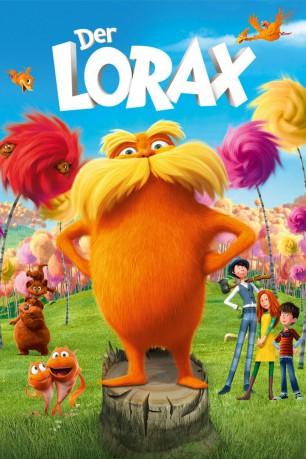

Alternativ: The Lorax
 
 IMDB-Wertung: 6.4 / 10
IMDB-Wertung: 6.4 / 10  Metascore:
Metascore: 
Der 12-jährige Ted würde alles tun, um einen echten Truffula-Baum zu finden und so das Mädchen seiner Träume zu beeindrucken. Doch Bäume gibt es in seiner Heimatstadt Thneedville schon lange nicht mehr. Auf seiner abenteuerlichen Suche nach dem letzten Baumsamen, stößt Ted auf die unglaubliche Legende vom Lorax, dem charmanten, aber mürrischen Waldmeister, der für die Bäumen spricht.
Jahr: 2012
Dauer: 86 Minuten
FSK: 0
Land: USA Studio: Universal PicturesTonspuren: DTS - ,
Untertitel: Deutsch,
Auflösung: 720p (1280x688) Größe: 3153 MB
Genre: Animation/Trick, Abenteuer, Komödie, Drama, Familie, Fantasy, Musical
Regisseur: Chris Renaud, Kyle Balda
Drehbuch: Dr. Seuss, Cinco Paul, Ken Daurio
Soundtrack: John Powell
Darsteller:
 Danny DeVito als The Lorax
Danny DeVito als The Lorax Ed Helms als The Once-ler
Ed Helms als The Once-ler Zac Efron als Ted
Zac Efron als Ted Betty White als Grammy Norma
Betty White als Grammy Norma Rob Riggle als Mr. O'Hare
Rob Riggle als Mr. O'Hare Jenny Slate als Ted's Mom
Jenny Slate als Ted's Mom Nasim Pedrad als Once-ler's Mom
Nasim Pedrad als Once-ler's Mom Joel Swetow als 1st Marketing Guy
Joel Swetow als 1st Marketing Guy Michael Beattie als 2nd Marketing Guy
Michael Beattie als 2nd Marketing Guy Stephen Tobolowsky als Uncle Ubb
Stephen Tobolowsky als Uncle Ubb Chris Renaud als Forest Animals
Chris Renaud als Forest Animals Bob Bergen als Additional Voices
Bob Bergen als Additional Voices John Cygan als Additional Voices
John Cygan als Additional Voices Debi Derryberry als Additional Voices
Debi Derryberry als Additional Voices Bill Farmer als Additional Voices
Bill Farmer als Additional Voices Jess Harnell als Additional Voices
Jess Harnell als Additional Voices Sherry Lynn als Additional Voices
Sherry Lynn als Additional Voices Laraine Newman als Additional Voices
Laraine Newman als Additional Voices Jim Ward als Additional Voices
Jim Ward als Additional Voices Jack Angel als Additional Voices
Jack Angel als Additional Voices Mona Marshall als Additional Voices
Mona Marshall als Additional Voices Jan Rabson als Additional Voices
Jan Rabson als Additional VoicesDatei: X:\Kinder Filme (G-M)\Lorax, Der (2012, FSKo.Al., 1280x688) 3D.mkv seit 12.03.2015
Festplatte: Kinder-Filme+Trick
 Es gibt insgesamt 84 Filme in der Gruppe 'Kinder Filme (G-M)'
Es gibt insgesamt 84 Filme in der Gruppe 'Kinder Filme (G-M)'